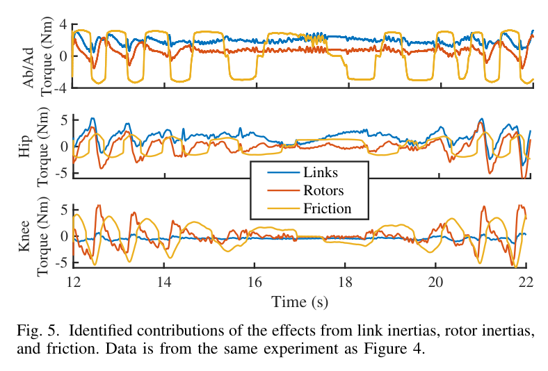

최소제곱에
물리 법칙을 더하다
4×4 행렬로 보는 관성 파라미터 식별
측정 토크를 잘 설명하는 모델이 실제로 존재할 수 있는 물체를 뜻하지는 않는다. 질량 분포의 공분산에서 출발하면, 이 간극을 작은 행렬 하나로 제약할 수 있다.
질량과 관성을 묶은 4×4 유사관성 행렬.
비퇴화 질량 분포의 실현 가능성을 볼록 제약으로 표현한다.
링크당 관성 파라미터는 10개다. 이 값들을 자유롭게 맞추는 대신 존재 가능한 질량 분포의 범위에서 오차를 최소화하면, 물리 일관성과 볼록최적화의 장점을 함께 얻는다.
오차를 줄이면서, 물리적으로 가능한 해를 고른다
강체의 역동역학은 관성 파라미터에 선형이므로 최소제곱으로 식별할 수 있다. 그러나 제약 없는 해에는 음의 질량이나 실제 질량 분포로 만들 수 없는 회전관성이 포함될 수 있다.
Wensing·Kim·Slotine은 회전관성의 삼각부등식을 질량 분포의 2차 모멘트와 연결하고, 비퇴화 분포의 물리 일관성을 4×4 유사관성 행렬의 양의 정부호 조건으로 표현한다. 여기에 CAD 기반 경계 타원체 조건을 더하면, 볼록최적화 안에서 물리적으로 실현 가능한 관성 파라미터를 추정할 수 있다. MIT Cheetah 3의 3자유도 다리에서는 링크·로터 관성과 마찰을 함께 식별했다.
물리 조건도 볼록하게
삼각부등식을 포함한 관성 조건을 파라미터에 선형인 작은 행렬로 묶는다.
형상 정보까지 반영
질량중심의 위치뿐 아니라, 분포 전체가 타원체 안에서 실현 가능한지 제약한다.
적은 데이터에서의 이점
제시된 실험에서는 강한 물리 제약이 적은 표본에서도 검증 오차를 낮추는 데 기여했다.
잘 맞는 파라미터와
존재 가능한 파라미터의 차이
모델 기반 전신 제어에는 정확한 동역학이 필요하다. 그 핵심인 질량·질량중심·회전관성을 데이터로 맞출 때, 잔차만 최소화하면 물리적으로 불가능한 값까지 후보에 들어온다. 이 논문은 최적화가 탐색하는 해의 범위 자체를 물리적으로 제한한다.

선형 회귀가 가능한 좌표를 택한다
링크 하나를 나타내는 파라미터는 질량 1개, 1차 모멘트 3개, 대칭 회전관성 행렬의 독립 성분 6개다. 질량중심 좌표를 직접 쓰는 대신 1차 모멘트 h = mc와 원점 기준 관성 Ī를 쓰면 역동역학은 π에 선형이 된다.
| 기호 | 의미 |
|---|---|
| Y | 위치·속도·가속도로 구성되는 역동역학 회귀행렬 |
| m, c, h | 질량, 질량중심, 1차 모멘트 h = mc |
| Ī, ĪC | 각각 좌표 원점 기준, 질량중심 기준 회전관성 |
| Σ, ΣC | 원점 기준 2차 모멘트, 질량중심 기준의 밀도 가중 2차 모멘트 |
| J(π) | 질량·1차 모멘트·2차 모멘트를 묶는 4×4 유사관성 행렬 |
기존 접근 사이의 빈칸

| 접근 | 구성 | 주요 한계·특징 |
|---|---|---|
| Sousa & Cortesão 2014 | 반일관성 LMI · 볼록 | 양의 질량과 관성만으로는 삼각부등식을 보장하지 못한다. |
| Traversaro 외 2016 | 완전 일관성 · 다양체 매개변수화 | 비볼록 문제이므로 전역 최적 보장이 어렵다. |
| Ayusawa 외 2011 | 완전 일관성 · 점질량 격자 | 이산 근사 오차와 변수 증가가 따른다. |
| Wensing 외 본 연구 | 유사관성 LMI · 볼록 | 작은 행렬 제약으로 물리 일관성과 경계 정보를 반영한다. |
경계 타원체 → 위치·분포 제약
질량과 관성의 실현 가능성
타원체 안의 질량 분포
볼록 문제의 최적해 π*
회전관성을 질량 분포의 언어로 읽기
핵심 전환은 회전관성을 직접 다루는 대신, 질량이 각 방향으로 얼마나 퍼져 있는지를 보는 것이다. 이 관점에서 관성의 삼각부등식은 2차 모멘트가 음수가 될 수 없다는 조건으로 바뀐다.
① 삼각부등식은 공분산의 조건이다
질량중심 기준 관성의 주값을 J₁, J₂, J₃라 하면, 실제 질량 분포는 다음 삼각부등식을 만족해야 한다.
질량중심에서의 위치를 xc, 밀도를 ρ라 하자. 밀도 가중 2차 모멘트 ΣC는 다음처럼 회전관성과 연결된다.
ΣC의 고유값이 μ₁, μ₂, μ₃이면 관성 주값은 J₁ = μ₂ + μ₃, J₂ = μ₁ + μ₃, J₃ = μ₁ + μ₂가 된다. 즉 각 방향의 2차 모멘트가 비음수라는 사실이 삼각부등식을 만든다.

관성의 삼각부등식은
“질량의 퍼짐이 음수일 수 없다”는 조건이다.
② 10개 파라미터를 4×4 행렬로 묶는다
원점 기준의 2차 모멘트 Σ는 π에 선형이다. 여기에 1차 모멘트와 질량을 배치하면 유사관성 행렬이 된다.
증명 아이디어 · Schur 보수
J ≻ 0은 m > 0이고 Σ − hhT/m ≻ 0인 것과 동치다. 그런데 Σ = ΣC + mccT, hhT/m = mccT이므로 남는 조건은 ΣC ≻ 0이다. 질량중심 때문에 생긴 항이 상쇄되면서 분포의 퍼짐만 남는다.
| 조건 | 표현 | 해석 |
|---|---|---|
| 반일관성 | 6×6 공간관성 I(π) ≻ 0 | 운동에너지는 양수지만, 질량 분포의 실현 가능성까지 보장하지는 않는다. |
| 완전 일관성 비퇴화 경우 | 4×4 유사관성 J(π) ≻ 0 | 양의 질량과 양의 정부호인 중심 2차 모멘트를 보장한다. |
실제 SDP 구현에서는 엄격 부등식을 직접 다루기보다 J ⪰ εI와 같은 수치적 여유를 둘 수 있다. 이때 ε와 단위 스케일은 구현에서 검토할 사항이다. 논문의 볼록성은 유효하지만, 수치적 여유가 실현 가능한 해의 범위를 지나치게 좁히지 않도록 해야 한다.
③ 질량중심뿐 아니라 분포 전체를 경계 안에 둔다
CAD가 링크의 경계 타원체 S를 제공한다면, 형상 정보를 식별에 사용할 수 있다. 중심이 xs, 형상 행렬이 Qs인 타원체에 대해 질량중심을 내부에 두는 조건은 다음과 같다.
그러나 중심만 안에 있다고 해서 관성에 대응하는 분포가 모두 안에서 실현되는 것은 아니다. 논문은 타원체의 이차형식을 나타내는 행렬 Q를 이용해 분포의 실현 가능성을 더 강하게 제약한다.

질량중심이 타원체 경계에 가까워질수록 허용되는 분포의 퍼짐은 줄어든다. 경계에 정확히 놓이면 점질량으로 퇴화하는 극한을 생각할 수 있다. 중심 위치만 검사하는 조건은 이런 결합을 놓친다.
Cheetah 3 다리에서 확인한 것
실험에서는 3자유도 다리의 링크 3개와 로터 3개를 다룬다. 관성만 조정하지 않고 점성 마찰과 쿨롱 마찰도 함께 식별해, 측정 토크를 설명하는 각 요소를 모델에 포함했다.
| 대상 | Cheetah 3 다리 1개 · 3 DoF · 링크 3개 + 로터 3개 |
|---|---|
| 구동계 | 기어비 10.6:1 · 점성 및 쿨롱 마찰 동시 식별 |
| 데이터 | 1 kHz · 학습 10,000표본 + 검증 10,000표본 |
| 운동 | 임피던스 제어로 발끝 구면각에 정현파 운동 부여 |
| 토크 입력 | 모터 드라이버 명령값 |
| 사전 정보 | CAD 관성 및 경계 타원체 · wπ = 10−6 |
| 풀이 | MOSEK · 보고된 계산 시간 1.67초 |
검증 토크 오차는 관절별 약 1.2–1.5 N·m

식별된 쿨롱 마찰의 대각 성분은 3.12, 1.25, 0.95 N·m이며, 물리 일관성 제약의 만족이 확인되었다. 다만 이 실험의 토크 기준은 직접 측정한 관절 토크가 아니라 드라이버 명령값이라는 점을 함께 읽어야 한다.
로터와 마찰도 토크를 설명한다

물리 제약은 데이터가 적을 때 특히 의미가 있다

형상과 물리 조건은 데이터만으로 구분하기 어려운 해를 배제하는 사전 정보로 작동한다. 다만 이 결과를 모든 기체와 운동에 일반화할 수는 없다. 데이터의 여기 수준, 모델 오차, 경계 타원체의 정확성이 함께 영향을 준다.
전역 최적해가 곧
유일한 실제 관성은 아니다
이 방법은 물리적으로 가능한 해를 고르고 볼록 문제를 풀게 해준다. 그러나 데이터에 드러나지 않는 파라미터 방향까지 새롭게 관측해 주지는 않는다. 식별 가능성, 물리 일관성, 최적성은 구분해야 한다.
| 남은 한계 | 의미와 다음 과제 |
|---|---|
| 3 DoF 실험 | 강체당 4×4 LMI는 작지만, 고자유도·부동 기저에서의 성능과 계산량은 별도로 검증해야 한다. |
| 명령 토크 사용 | 실측 토크 및 구동기 모델과 결합해 입력 오차를 분리할 필요가 있다. |
| 정지 부근 마찰 | 속도 부호가 불확실한 구간에서는 단순 쿨롱 모델의 오차가 남는다. |
| 확률적 불확실성 | “통계적 관점”은 질량 분포의 모멘트 해석이다. 파라미터 신뢰구간이나 확률적 추론을 제공하는 것은 아니다. |
| 비식별 방향 | 데이터가 구분하지 못하는 해의 선택에는 물리·형상 제약과 사전값 정규화가 작용한다. |
| 접촉·유압 적용 | 제시된 실험이 직접 검증한 범위에 포함되지 않는다. 관련 센서와 구동기 모델의 검증이 선행되어야 한다. |
디지털 트윈에 적용한다면
원 노트의 응용 맥락은 실차 식별에서 얻는 파라미터 묶음과 AGX 같은 트윈이 요구하는 링크별 개별값 사이의 간극이다. 아래는 논문 실험 결과와 구분되는 적용 해석이다.
“식별된 질량”보다
“측정과 모순 없는 한 해”라는 표현이 정확할 수 있다.
-
현재 관성값의 일관성부터 검사한다
트윈의 질량·질량중심·관성을 같은 좌표계와 기준점으로 변환한 뒤 J(π)를 구성한다. 측정 데이터 없이도 물리 일관성을 검사할 수 있다. 유의미한 음의 고유값이 나오면 기준점, 축 변환, 단위, 입력값을 점검한다.
-
묶음 측정값과 개별값의 역할을 구분한다
정확히 알려진 파라미터 묶음은 등식 제약으로, 불확실한 측정은 허용 오차나 가중 잔차로 반영한다. J의 물리 조건과 메시 기반 경계 타원체를 추가하고, 보유 사전값을 정규화에 사용해 가능한 배치 하나를 선택한다.
-
적은 표본에서의 효과를 별도로 검증한다
20 Hz 경사계·압력 카운트처럼 표본과 신호 품질이 제한된 환경에서는 물리 제약이 유용할 수 있다. 다만 Cheetah 실험의 결과가 그대로 이전된다고 가정하지 말고, 분리된 검증 데이터로 확인해야 한다.
-
압력에서 토크로 가는 경로를 먼저 보정한다
유압 장비에서는 압력 보정, 유효 실린더 면적, 기구학적 지렛팔을 통해 토크가 정해진다. 물리적으로 가능한 관성 제약도 잘못된 입력 토크를 바로잡아 주지는 못한다.
출처와 해석의 경계
Linear Matrix Inequalities for Physically-Consistent Inertial Parameter Identification: A Statistical Perspective on the Mass Distribution
Patrick M. Wensing · Sangbae Kim · Jean-Jacques E. Slotine
- 이 글은 제공된 논문 요약 노트를 바탕으로 재구성했다. 수식 번호, 실험 설정과 수치는 노트에 기재된 원 논문 참조를 따른다.
- Table I 및 Fig. 1–6은 제공된 논문 이미지다. 그림의 출처는 위 논문이며, 캡션의 한국어 설명과 본문의 흐름도는 이해를 돕기 위해 재구성했다.
- 엄격한 양의 정부호 조건과 퇴화 분포를 포함하는 양의 준정부호 조건을 구분했다. Schur 보수 설명에서도 이 차이를 유지했다.
- 검증 오차의 캡션 집계 문제는 원 노트의 확인 과제로 남겼다. 1.67초의 계산 시간은 해당 실험의 보고값이며 일반적인 실행 시간 보장이 아니다.
- Werner 2025, AGX, 아주대 사전값에 관한 원 노트의 언급은 개인 적용 맥락이다. 이 글에서는 외부 비교 연구의 결론으로 취급하지 않고, 비식별 파라미터를 트윈에 배치하는 문제로 풀어 설명했다.
- 인용 부호 형태로 강조한 문장들은 해설 또는 적용 의견이며, 논문 저자의 직접 인용이 아니다.
좋은 식별은 가능한 물체에서 시작한다
이 논문의 핵심은 물리 일관성을 최적화가 다룰 수 있는 형태로 바꾼 데 있다. 질량 분포의 2차 모멘트를 이용하면, 10개 관성 파라미터의 실현 가능성을 작은 행렬로 검사하고 형상 정보까지 반영할 수 있다.
실무의 첫걸음도 명확하다. 현재 모델의 좌표계와 기준점을 맞추고 J(π)를 검사한다. 그다음 데이터가 결정하는 값과 사전 정보가 선택하는 값을 구분한다. 이 구분이 있어야 물리적으로 그럴듯한 모델을 신뢰할 수 있는 모델로 발전시킬 수 있다.